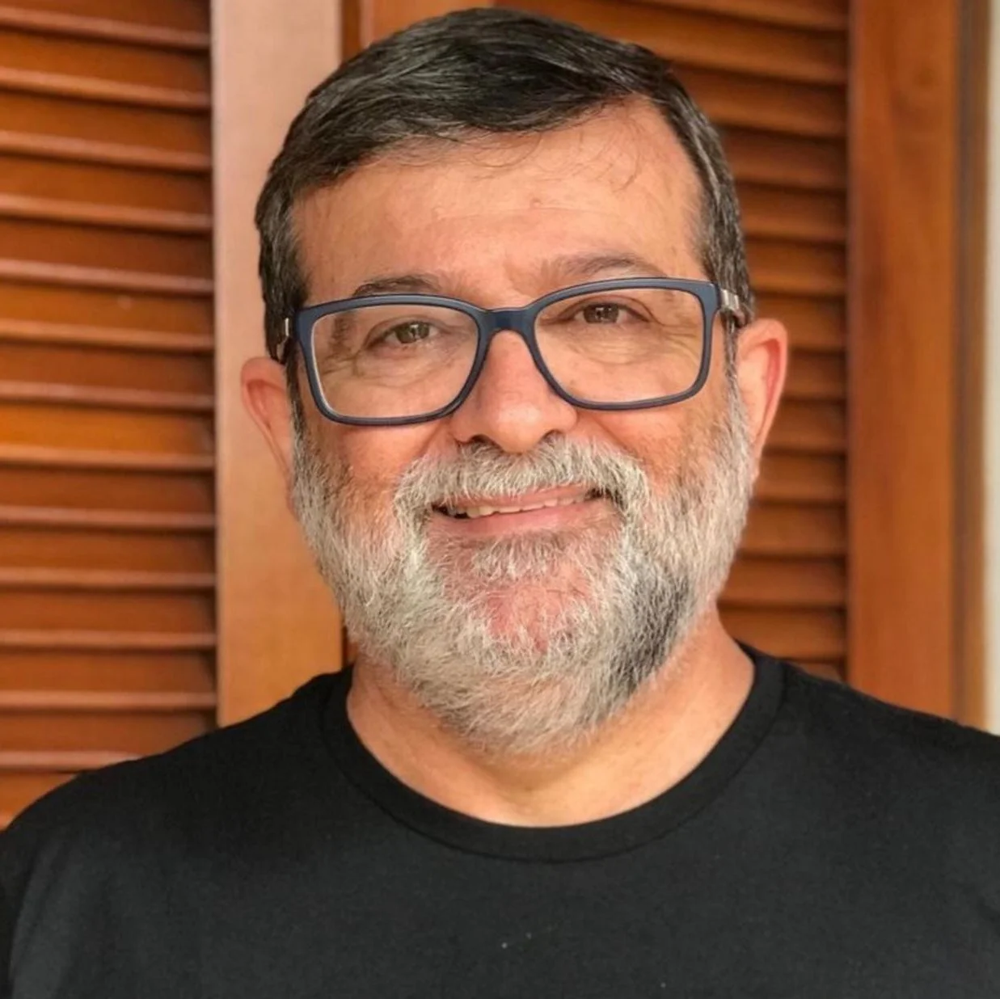

Marcos Mendes Granconato
SOBRE MIM
- Granconato é pastor da Igreja Batista Redenção, em São Paulo,
bacharel em Direito e Teologia
e mestre em História Eclesiástica pela Universidade Mackenzie. Casado com a Simone pai de três filhas, Helena, Isabela e Sofia.
FORMAÇÃO ACADÊMICA
-
Formado em Teologia pelo Seminário Bíblico Palavra da Vida, em Atibaia, Marcos Granconato é pastor titular da Igreja Batista Redenção, em São Paulo, há mais de 20 anos.
Bacharel em Direito pela Universidade São Francisco de Bragança Paulista, é também mestre em Teologia Histórica pelo Centro Presbiteriano de Pós-graduação Andrew Jumper.
Além de pastor, atua como conferencista e escritor, destacando-se como defensor da teologia conservadora e expositor bíblico.
EXPERIÊNCIA PROFISSIONAL
- Trabalhou como professor de Teologia no Instituto Shaeffer de Teologia e Cultura - 2022
- Pastorado na Igreja Batista Redenção, São Paulo - 2014
- Autor de livros, Editora Monergismo - 2015
HABILIDADES
- Altamente capacitado em teologia. Sua formação sólida lhe proporciona um entendimento profundo das escrituras e das doutrinas cristãs.
- Exímio expositor bíblico, capaz de interpretar e comunicar as Escrituras de maneira que sejam compreensíveis e aplicáveis à vida dos ouvintes.
- Possui um profundo conhecimento da história da Igreja, o que lhe permite contextualizar práticas e doutrinas atuais dentro de uma perspectiva histórica mais ampla.
- Suas habilidades de oratória e a capacidade de engajar o público são aspectos importantes de seu ministério.
- Um líder influente e respeitado na comunidade teológica e eclesiástica, contribuindo significativamente para o ensino, a liderança e a edificação da Igreja.
CONTATO
- Telefone: (11) 1234-5678
- Email: marcos.granconato@batista.com
- Endereço: Rua Suspensório do Papai, 1500, São Paulo, SP
- LinkedIn: linkedin.com/in/marcosgranconato
Parnamirim, 17 de Julho de 2024